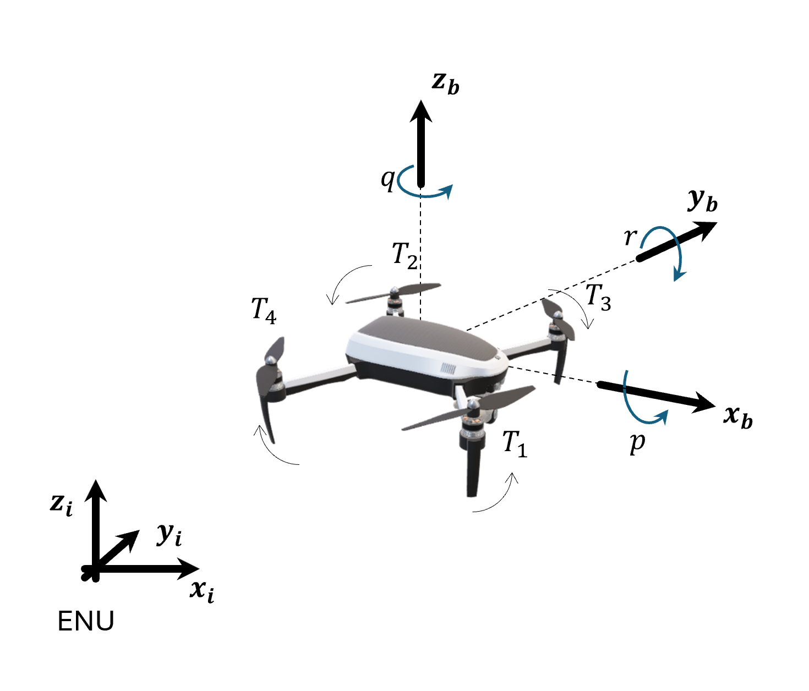

Vehicles#
Dynamics gave the equations of motion that turn a force and a moment into the motion of a body. These equations do not depend on the vehicle. The use cases of c4dynamics, however, fly, drive, and steer different vehicles: a quadcopter, a missile, a car, and a helicopter.
What makes a quadcopter different from a missile is not the equations of motion, but the physics that generates the forces and the moments: rotors that push along one body axis, a rocket motor and a body that produces lift as it meets the air at an angle, tires that hold the car on its path, or a pivot that constrains the helicopter to two rotations. The control inputs act on the vehicle only through these forces and moments. This page describes the force and moment model of each vehicle: what produces the forces and the moments, and how the control inputs shape them.
The workflow is shared by all the vehicles:
Define a state object with the state variables of the vehicle.
Compute the forces and the moments from the vehicle physics and the control inputs.
Integrate the equations of motion over a time step and update the state.
Store the state and analyze the results.
The state object is the common interface between the vehicle and the algorithm.
The vehicle model changes, but the state object keeps the same interface:
X to get and set the state vector,
store and
data to record and retrieve the history,
and plot to view it.
Therefore, a guidance law, a controller, or a filter that is developed on one vehicle
moves to another vehicle smoothly, by replacing the state object and the force model,
while the rest of the program remains intact.
Vehicle |
Control inputs |
Force and moment sources |
Attitude |
Model |
|---|---|---|---|---|
Quadcopter |
Four rotor speeds |
Rotor thrust and reaction torque, drag, gravity |
Quaternion (or Euler angles) |
|
Missile |
Fin deflections |
Rocket thrust, aerodynamic lift and drag, aerodynamic moments, gravity |
Euler angles |
|
Car |
Steering rate |
Tire forces, assumed to follow the steering (kinematic model) |
Heading |
Kinematic (unicycle) model |
Helicopter (2-DOF) |
Two rotor voltages |
Rotor torques, gravity about the pivot, friction |
Pitch and yaw angles |
Lagrangian pitch-yaw model |
Quadcopter#
A quadcopter has no control surfaces. Every force and moment, other than gravity and drag, comes from four fixed rotors that all point along the body up axis. The control input is the vector of the four rotor speeds:
Frames
The model supports the two common pairs of an earth frame and a body frame,
'NED' and 'ENU'
(see Reference Frames).
The earth frame is treated as inertial, and is denoted \(I\).
Both conventions use the 3-2-1 rotation, and the Body from Inertial matrix is \([BI]\).
The two conventions differ in the direction of up along the body \(z\) axis,
denoted by the sign \(s\):
|
Body frame |
\(s\) |
|---|---|---|
|
\(x\) forward, \(y\) right, \(z\) down (FRD) |
\(-1\) |
|
\(x\) forward, \(y\) left, \(z\) up (FLU) |
\(+1\) |
The sign \(s\) appears wherever the model depends on the frame: the rotors thrust along \(s \cdot z_b\), and gravity acts along \(-s \cdot z\).


Reference systems and rotor layout in the 'ENU' convention.
Earth (inertial) frame: ENU (east, north, up).
Body frame: FLU (forward, left, up).
Positive rotation about an axis is given by curling the right-hand fingers.
Rotors rotation: 1: CCW (counterclockwise), 2: CCW, 3: CW (clockwise), 4: CW.#
Rotors
Rotor \(i\) is located at the body position \((x_i, y_i)\) and spins at the speed \(\Omega_i\) in the direction \(d_i\) (\(+1\) counterclockwise seen from above, \(-1\) clockwise). It produces a thrust and a reaction torque, both proportional to the square of its speed:
Where \(k_T\) is the thrust coefficient, in N/(rad/s)², and \(k_Q\) is the torque coefficient, in N·m/(rad/s)².
The default rotor layout is an \(X\) configuration with the moment arm \(l\), in the motor order of ArduPilot:
Rotor |
Position |
\((x_i, y_i)\) |
\(d_i\) |
|---|---|---|---|
1 |
front-right |
\((l, -s \cdot l)\) |
\(+1\) (CCW) |
2 |
rear-left |
\((-l, s \cdot l)\) |
\(+1\) (CCW) |
3 |
front-left |
\((l, s \cdot l)\) |
\(-1\) (CW) |
4 |
rear-right |
\((-l, -s \cdot l)\) |
\(-1\) (CW) |
The factor \(s\) in \(y_i\) follows the body \(y\) axis,
which points to the right in FRD and to the left in FLU.
Any other layout is given by the explicit attributes rotor_pos
(the body \((x_i, y_i)\) of each rotor) and rotor_dir (the \(d_i\)).
Forces
The body force is the total thrust along the body up axis and a linear aerodynamic drag that opposes the air-relative velocity:
Where \(A_x, A_y, A_z\) are the drag coefficients along the body axes, and \((u_a, v_a, w_a)\) are the body components of the air-relative velocity (see Kinematics):
\(V\) is the inertial velocity of the state, and \(V_{wind}\) is the wind velocity
in the earth frame (the optional attribute wind).
In still air, \((u_a, v_a, w_a)\) equal the body components of the inertial velocity,
\((u, v, w)\).
The force in the inertial frame, which enters the translational equations, adds gravity:
The collective thrust is the only control force, and it acts along the body up axis. To accelerate sideways, the vehicle must first tilt. \(F_b / m\) is the specific force, i.e. what an accelerometer at the center of mass measures.
Moments
Three mechanisms produce the body moment:
The thrust of each rotor acts at its position, \((x_i, y_i, 0) \times (0, 0, s \cdot F_i)\), and produces roll and pitch moments.
The reaction torque of each rotor turns the body against the rotor’s spin: a counterclockwise rotor turns the body clockwise seen from above. The reaction torques produce the yaw moment.
The rotors spin, and their angular momentum, \(h = s \cdot I_R \cdot \sum d_i \cdot \Omega_i\) along the body \(z\) axis, rotates with the body. This adds the gyroscopic term \(-\omega \times h\), which is the coupling term of Euler’s equations applied to the rotors.
With a rotational drag \(A_r\) that opposes the angular rates, the body moment is:
Where \(I_R\) is the rotor moment of inertia. The gyroscopic terms couple the roll and the pitch dynamics: a pitch rate generates a roll moment, and a roll rate generates a pitch moment. \([M_x, M_y, M_z]\) is the moment \(M\) of the rotational equations.
Mixing
A controller usually commands the total thrust and the three control torques, \([T, \tau_x, \tau_y, \tau_z]\), i.e. the rotor parts of the force and the moments above. For the \(X\) layout, they are a linear function of the rotor thrusts:
The controller maps the commands to the rotor thrusts by the inverse of this mixing matrix, and to the rotor speeds by \(\Omega_i = \sqrt{F_i / k_T}\).
Each of the four outputs has a physical meaning:
Collective thrust \(T\): the sum of the rotor thrusts.
Roll torque \(\tau_x\): a thrust difference between the left rotors (2, 3) and the right rotors (1, 4). It has the same sign in both conventions: positive roll lowers the right side, and is driven by the left rotors.
Pitch torque \(\tau_y\): a thrust difference between the front rotors (1, 3) and the rear rotors (2, 4). Positive pitch raises the nose in FRD, and lowers it in FLU, hence the factor \(s\).
Yaw torque \(\tau_z\): the sum of the reaction torques. When the counterclockwise pair spins faster than the clockwise pair, the torques do not cancel, and the vehicle turns clockwise seen from above, with little change in the total thrust. Clockwise seen from above is a negative rotation about the FLU \(z\) (up), and a positive rotation about the FRD \(z\) (down), hence the factor \(s\).
Attitude
A quadcopter can flip, roll, and point its up axis in any direction,
so it is a natural candidate for the quaternion representation
(see Kinematics).
The attitude representation is independent of the force model:
quadeqm accepts a 13-state
quatbody as well as a 12-state
rigidbody.
Implementation
quadforces returns the
body force (thrust and drag) and the body moment.
quadeqm rotates the force to the inertial frame,
adds gravity, and evaluates the equations of motion,
eqm6 for a 12-state vector
or eqm6q for a 13-state vector,
with the signature of scipy.integrate.solve_ivp.
The vehicle parameters (\(m, g, l, k_T, k_Q, I_{xx}, I_{yy}, I_{zz}, A_x, A_y, A_z, A_r, I_R\))
are attributes of the state object.
The parameters of the reference vehicle are given by
c4dynamics.models.quad.default_quad_config().
Example
Define the quadcopter, speed up the counterclockwise rotors by 10%, slow down the clockwise rotors by 10%, and integrate the equations of motion:
>>> import numpy as np
>>> import c4dynamics as c4d
>>> from scipy.integrate import solve_ivp
>>> from c4dynamics.models.quad import default_quad_config
>>> quad = c4d.quatbody()
>>> for k, v in default_quad_config().items():
... setattr(quad, k, v)
>>> w_hover = np.sqrt(quad.m * quad.g / 4 / quad.kT) # rotor speed that carries the weight
>>> rotor_speeds = w_hover * np.array([1.1, 1.1, 0.9, 0.9]) # ccw pair faster, cw pair slower
>>> F_b, M_b = c4d.eqm.quadforces(quad.X, quad, rotor_speeds, 'ENU')
>>> F_b # thrust along body up
array([0, 0, 4.63...])
>>> M_b # a yaw moment only
array([0, 0, -0.035...])
>>> dt = 0.01
>>> for t in np.arange(0, 2, dt):
... quad.store(t)
... sol = solve_ivp(c4d.eqm.quadeqm, [t, t + dt], quad.X, args = (quad, rotor_speeds, 'ENU'))
... quad.X = sol.y[:, -1]
... quad.quat = quad.quat # normalize to a unit quaternion
>>> print(quad)
[ x y z vx vy vz qw qx qy qz p q r ]
>>> quad.quat
array([ 0.985..., 0. , 0. , -0.170...])
>>> quad.psi * c4d.r2d # turns clockwise seen from above
-19.6...
The reaction torques turn the vehicle about its up axis.
The quaternion is a rotation of \(\alpha = -19.6°\) about \(z\):
\(q_w = \cos(\alpha / 2)\), \(q_z = \sin(\alpha / 2)\).
The total thrust is slightly above the weight, and the vehicle climbs slowly.
Replacing c4d.quatbody() by c4d.rigidbody() selects the Euler angles model
with no other change in the code.
Use cases
Cascade PID Control: a cascade PID controller flies the quadcopter on a figure-eight trajectory.
EKF Estimation: an extended Kalman filter estimates the quadcopter state in closed loop with the controller.
ArduPilot Simulation: the ArduPilot flight controller flies a
quatbodyquadcopter in a figure-eight.
Missile#
State vector
The missile is a rigid body with six degrees of freedom,
represented by a rigidbody object:
The mass and the moments of inertia are attributes of the object,
mass and
I,
and may be updated during the run, as the rocket motor burns its fuel.
A missile is axially symmetric, \(I_{yy} = I_{zz}\),
so its roll is decoupled from the pitch and the yaw
(see Rotational Motion).
The target is a point mass with three degrees of freedom, represented by a
datapoint object:
Forces and moments
The forces on the missile are the propulsion along the body \(x\) axis,
the aerodynamic lift and drag, and gravity.
The propulsion and the aerodynamic forces are computed in the body frame and rotated to the
inertial frame by RB.
The aerodynamic moments are computed in the body frame from the angles of attack
and the fins deflections.
The control input, the fins deflections, acts on the missile only through these
aerodynamic moments.
The forces and the moments enter the 6DOF equations of motion with Euler angles,
eqm6
(see The Equations of Motion),
integrated by rigidbody.inteqm.
The target is integrated by datapoint.inteqm
(eqm3).
Example
Launch the missile at \(30°\) pitch in a NED frame (\(z\) down) with a constant thrust, and propagate a non-maneuvering target:
>>> missile = c4d.rigidbody(vx = 30 * np.cos(30 * c4d.d2r), vz = -30 * np.sin(30 * c4d.d2r), theta = 30 * c4d.d2r)
>>> missile.mass = 85 # kg
>>> missile.I = [0.5, 61, 61] # kg·m²
>>> target = c4d.datapoint(x = 4000, z = -1000, vx = -250)
>>> dt = 0.01
>>> for t in np.arange(0, 3, dt):
... missile.store(t)
... target.store(t)
... thrust = missile.RB @ [3000, 0, 0] # body x to inertial
... gravity = [0, 0, missile.mass * c4d.g_ms2] # z down
... missile.inteqm(thrust + gravity, [0, 0, 0], dt) # forces, moments, dt
... target.inteqm([0, 0, 0], dt)
>>> missile.vel_mag()
123.8...
>>> target.x
3250.0...
In the use case, the moments of the aerodynamics and the control fins replace the zero moments vector, and the guidance law closes the loop.
Use cases
Proportional Navigation Guidance: a 6DOF missile, guided by proportional navigation, intercepts a target.
Car#
State vector
The car is modeled in the plane, by its position and its heading.
It is represented by a state object
with the state variables:
Where:
\(x, y\) are the position coordinates in the plane
\(\psi\) is the heading angle with respect to the \(x\) axis
Model
The car is the one vehicle on this page that is modeled without forces. The tires are assumed to hold the car on the path that the steering dictates, with no slip. Under this assumption, the motion is fully described by kinematics, and the force and moment models are not needed.
At a constant speed \(V\) (here a scalar, the magnitude of the velocity), the kinematic (unicycle) model of the car is given by:
Where \(\delta\) is the steering input, the rate of change of the heading.
For a straight reference line along the \(x\) axis, the model is linearized about \(\psi = 0\). The longitudinal motion decouples, and the lateral dynamics reduce to two state variables, \(X = [\psi, y]^T\), with \(\dot{\psi} = \delta\) and \(\dot{y} = V \cdot \psi\). This is the prediction model of the MPC use case.
Example
Define the car with an initial lateral offset of 1 m, steer it back to the line with a simple feedback, and store the steering input as a parameter of the state:
>>> V = 22.3 # m/s
>>> def car_model(t, X, delta):
... x, y, psi = X
... return [V * np.cos(psi), V * np.sin(psi), delta]
>>> car = c4d.state(x = 0, y = 1, psi = 0)
>>> car.delta = 0
>>> dt = 0.2
>>> for t in np.arange(0, 8, dt):
... car.store(t)
... car.storeparams('delta', t = t)
... car.delta = -0.5 * car.y - 2 * car.psi
... sol = solve_ivp(car_model, [t, t + dt], car.X, args = (car.delta,))
... car.X = sol.y[:, -1]
>>> print(car)
[ x y ψ ]
>>> car.y # back on the line
-0.02...
The same car seen by a camera is a point in the image plane.
The car tracker use cases represent it by a
pixelpoint,
\(X = [x, y, w, h]^T\) (the center pixel and the bounding box size),
and propagate it with a constant velocity model in a
kalman filter.
Use cases
MPC Steering: a model predictive controller steers the car to a straight reference line.
Car Tracker (YOLOv3) and Car Tracker (YOLO11): a Kalman filter tracks a car detected in a video, with constant velocity dynamics.
Helicopter#
State vector
The helicopter is a laboratory-scale model with two degrees of freedom.
It is mounted on a fixed base, and rotates in pitch and yaw only, with no translational motion.
It is represented by the helicopter environment, a subclass of
state
(c4dynamics.envs.environments.helicopter), with the state variables:
Where:
\(\theta, \psi\) are the pitch (elevation) and yaw (azimuth) angles
\(\dot{\theta}, \dot{\psi}\) are the pitch and yaw angular rates
Model
The pivot constrains the body to two rotations. Rather than the Newton-Euler equations with the constraint forces of the pivot, the equations of motion are derived by Lagrangian mechanics, directly in terms of the two free angles. Two rotors, driven by the voltages \(V_p\) and \(V_y\), generate the pitch and the yaw torques:
Where:
\(J_p, J_y\) are the pitch and yaw moments of inertia
\(M, L_{cm}\) are the mass and the center of mass distance from the pivot
\(D_p, D_y\) are the pitch and yaw viscous damping
\(K_{pp}, K_{py}, K_{yp}, K_{yy}\) are the torque gains from each rotor to each axis
\(g\) is the gravity acceleration
The yaw-pitch coupling terms (centrifugal and Coriolis) and the cross rotor gains make the system a nonlinear multi-input multi-output plant. The equations are written in the control-affine form:
with \(X_1 = [\theta, \psi]^T\), \(X_2 = [\dot{\theta}, \dot{\psi}]^T\),
and \(u = [V_p, V_y]^T\).
The helicopter object provides F(X), G(X), and dynamics(t, X, u),
the full state derivative with the signature of scipy.integrate.solve_ivp.
Example
Find the trim voltages, \(G \cdot u = -F\), that hold the helicopter at rest, add a step to the pitch voltage, and integrate the equations of motion:
>>> from c4dynamics.envs.environments import helicopter
>>> heli = helicopter(theta = 0, psi = 0)
>>> u_trim = np.linalg.solve(heli.G(), -heli.F())
>>> u = u_trim + [2, 0] # V
>>> dt = 0.01
>>> for t in np.arange(0, 2, dt):
... heli.store(t)
... sol = solve_ivp(heli.dynamics, [t, t + dt], heli.X, args = (u,))
... heli.X = sol.y[:, -1]
>>> print(heli)
[ θ ψ dtheta dpsi ]
>>> heli.theta * c4d.r2d, heli.psi * c4d.r2d # pitch up, and a coupled yaw
(10.4..., -2.5...)
Use cases
Neural Learning Control: a backstepping controller with a neural network estimator of the uncertain dynamics tracks a pitch-yaw reference.
See Also#
Previous: the equations of motion that all the vehicles share |
|
The state data-structure and its operations |
|
Frames, rotation matrices, Euler angles, and quaternions |
|
Quadcopter forces and moments, and equations of motion shaped for |
|
Equations of motion and integration functions |